09.10 基隆河流域空拍紀實
鋼桁架鐵橋與現代拱橋橫臥水上，基隆河在密集的現代樓房旁彎曲流淌。順著蜿蜒的水道緩緩推進，兩岸綠帶護著昔日的水返腳。當鏡頭收攏河灣沙洲與背後的重重遠山，這條滋養峰仔峙社的古老水路，正帶著我們逆流讀回台北盆地最初的記憶。
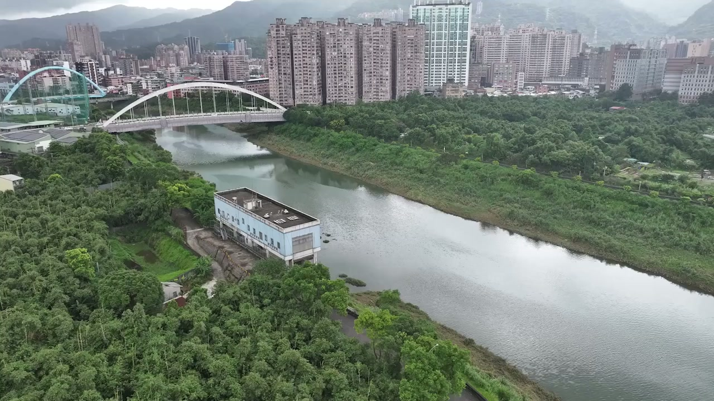
換一個高度重新觀看

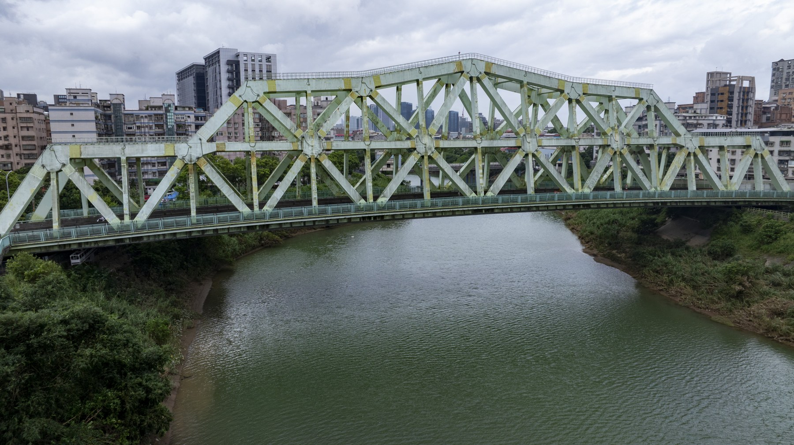
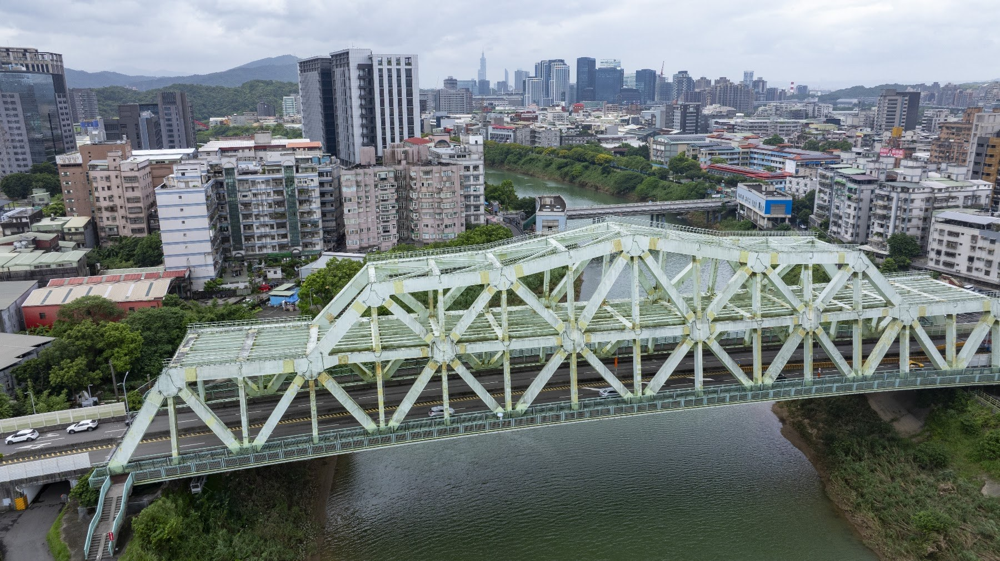
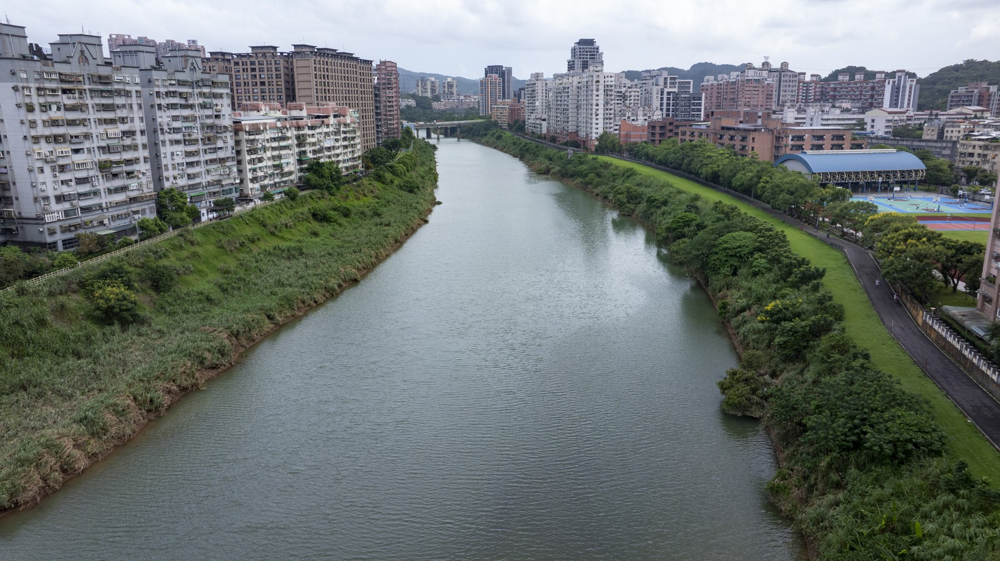
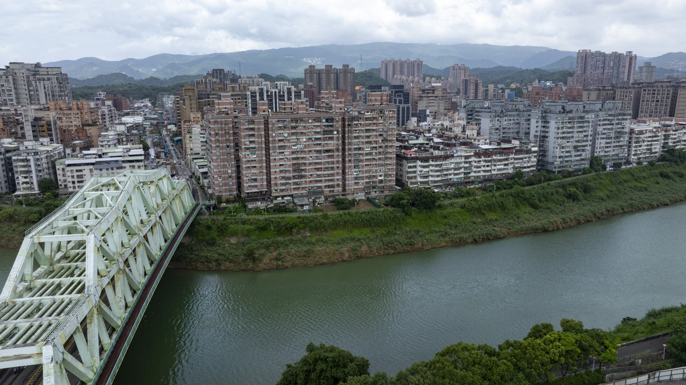
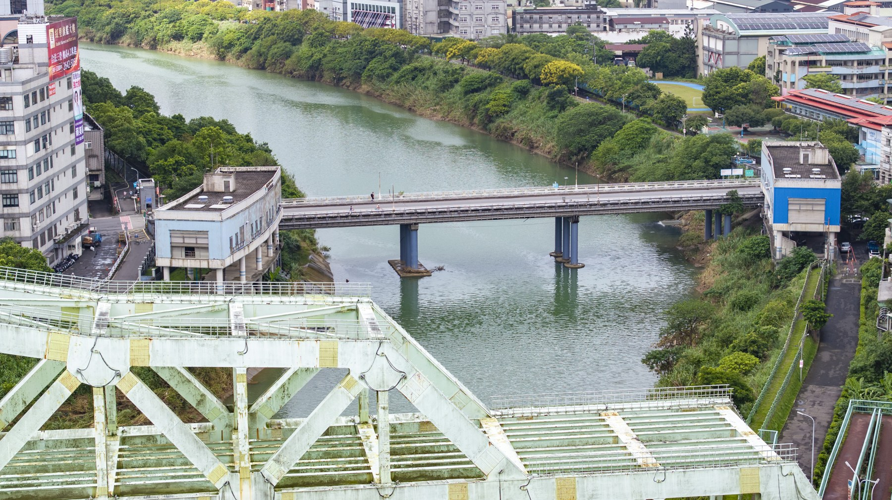
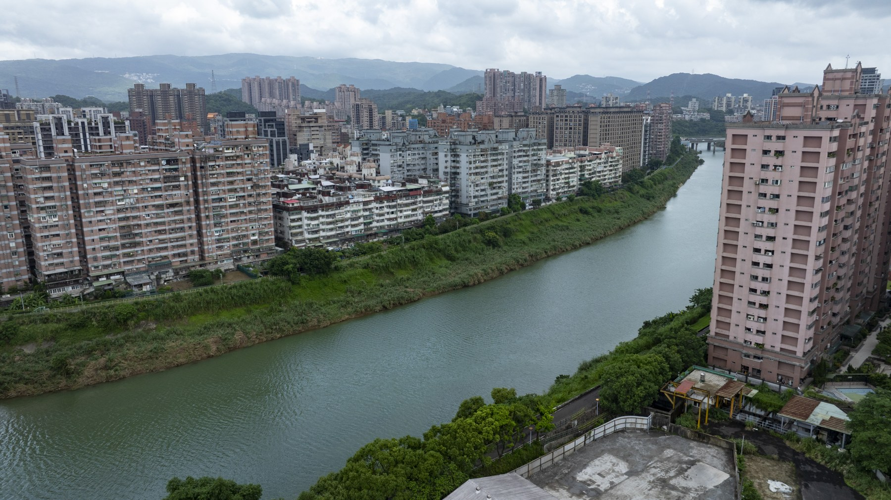
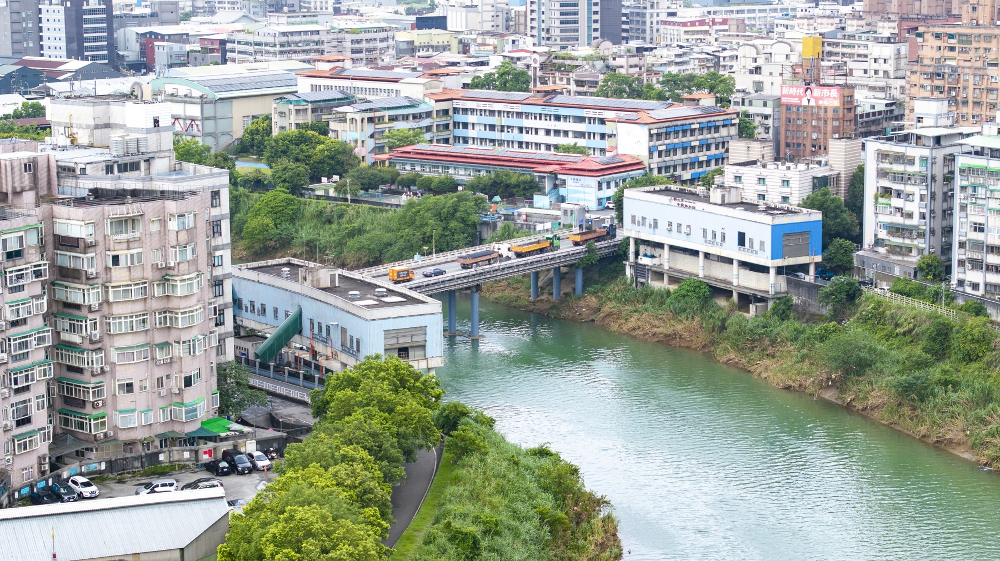
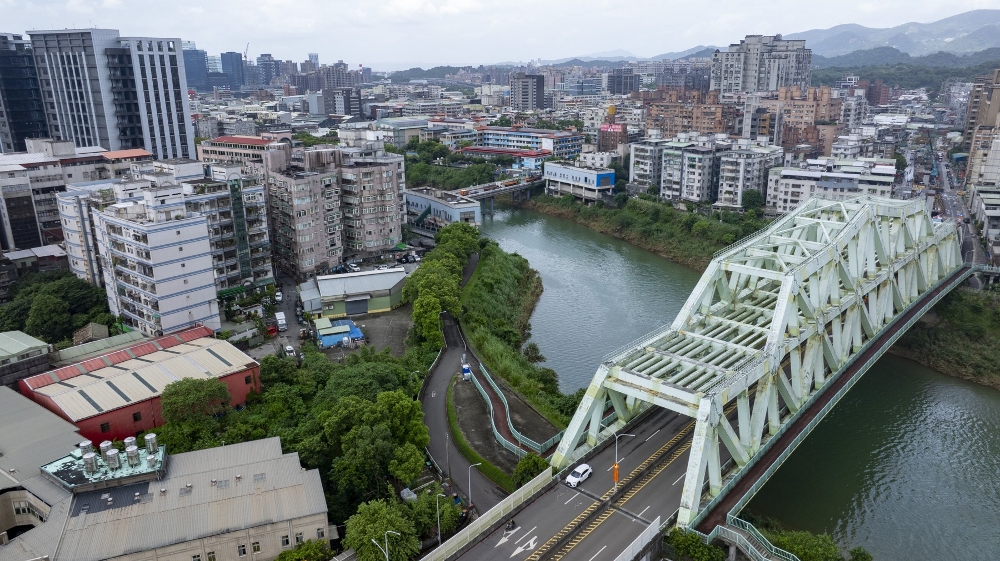
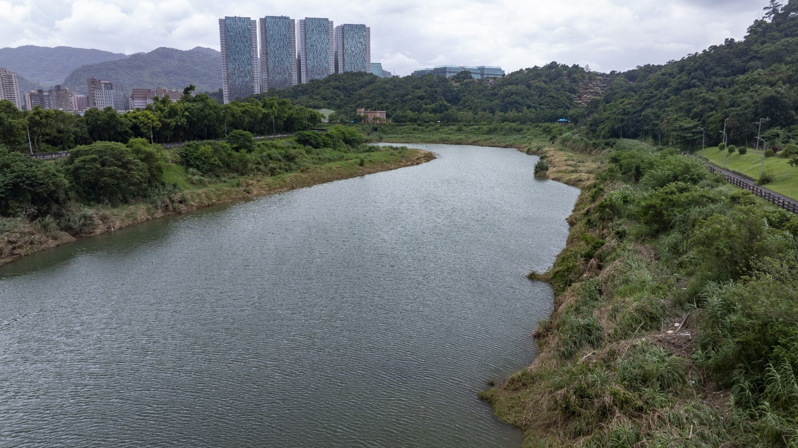
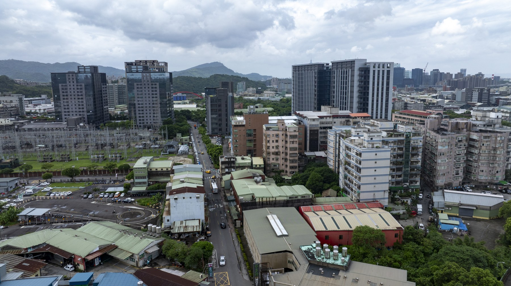
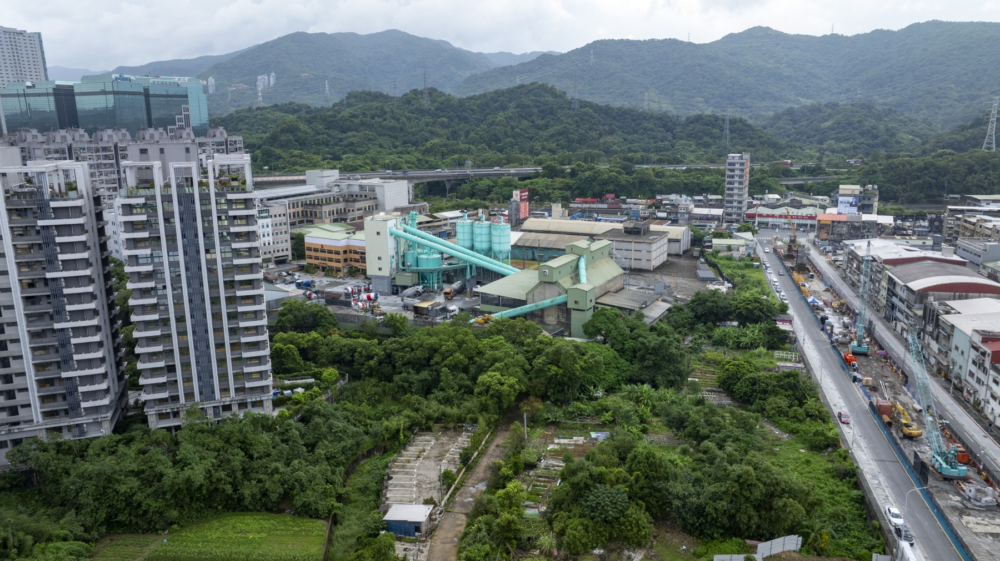
汐止峰仔峙社 松山錫口社 塔塔悠社田野調查暨空拍影像採集工作通告單
南港社大—消失的台北原住民故事班。
基本資訊
拍攝日期：2026年9月10日（星期四）。集合時間：上午09:00。集合地點：汐止樟樹灣夜市停車場（點此開啟 Google Maps 地圖定位）。
個人裝備與注意事項
防曬與補充水分：天氣炎熱，請務必攜帶充足飲用水、遮陽帽、太陽眼鏡及防蚊液，並適時補充水分防止中暑。
護目注意事項：空拍作業時常需仰望高亮度天空，請全程配戴太陽眼鏡以確保目視追蹤無人機時的視覺清晰與眼部安全。
隨隊支援器材
器材由老師提供。空拍設備：DJI Mavic 3 Pro（含3顆原廠電池）。全景攝影：Insta360 X5 全景攝影機。輕裝拍攝：Insta360 Luna Ultra 口袋攝影機。輔助配件：高角度延伸桿、無線麥克風組、相關腳架與儲存卡。
拍攝重點與延伸地點
基隆河岸汐止段與水尾灣園區：記錄河道演變與原住民族沿河墾殖、建聚之地形空間。
新社舊社橋與社後地區：探尋「峰仔峙社」歷史聚落核心，對比當代都市地景與昔日平埔族群社址。
原住民公園與小南港山：從小南港山高位俯瞰基隆河彎道與平原全景，建立峰仔峙社群生活空間的地理想像與空間軸線。
周邊延伸地點：社後頂（湖光里）、松山錫口社、塔塔悠社、樟樹灣周邊步道與聚落邊界。
影像採集技術 手法與拍攝可能性延伸
空拍作業與視野拓展
空間想像構圖（古今疊合）：利用 DJI Mavic 3 Pro 的多焦段鏡頭（廣角、3x、7x中長焦），針對基隆河彎道（如水尾灣）、新社橋進行高空正俯瞰（Top-down）拍攝，方便後續製作古地圖與當代地景的疊合圖層。
以長焦鏡頭遠距壓縮感，拍攝小南港山與基隆河道的空間相對位置，帶出虛擬人物或古路徑在現代建築縫隙中的歷史想像。
一軸軌道航拍：沿著基隆河水岸進行低空一鏡到底（One-take）推進，模擬昔日舟楫航行於基隆河向東探尋峰仔峙社的視角。
地面移動與機動採集
Ubike 騎行視角：團隊可善用基隆河自行車道，騎乘 Ubike 進行高效率移動採集。將 Insta360 Luna Ultra 或 Insta360 X5 固定於 Ubike 車把手、胸前或安全帽上，進行流暢的「沿河導覽動態紀錄」。
無線麥克風口述紀錄：騎行或步行停靠重點站點（如舊社橋、原住民公園）時，文史講解者配戴無線麥克風，結合地面中近景進行現場田野口述側拍。
360度全景與高角度互動技術
超高視角（超長延伸桿應用）：將 Insta360 X5 安裝於高角度延伸桿上，於窄巷、舊社橋下或樹冠層中伸出，模擬「低空無人機」無法進入的穿透視角。
全景互動與虛擬疊合：利用360全景拍攝，後製可彈性選擇視角（小行星模式、平視鏡頭轉場），並利於在後製軟體中加入3D虛擬導覽標籤、古今邊界線或虛擬平埔族群人物插畫。
國道高速公路紅區限制與空拍安全注意事項
本區域鄰近國道三號（高速公路）及汐止交流道，部分空間屬於禁飛區（紅區）或限航區，請務必嚴格遵守以下空拍規範。
圖資預先確認：起飛前請務必透過民航局 Drone Map（遙控無人機管理系統）或 DJI Fly App 確認當前起飛點之空域顏色（紅區絕對禁止起飛；黃區／綠區注意限高）。
高速公路禁飛緩衝：絕對禁止於國道三號正上方飛行或進行俯拍。飛行路徑應遠離公路主線至少30–50公尺以上，避免信號干擾或車流風切引發墜機風險。
目視飛行與限高：遵守合法飛行高度（通常為400呎／約120公尺以下）。保持目視範圍內操作（VLOS），並由同伴協助監控周邊高架道路車流與高壓電線。
備用方案：若特定核心地點（如靠近國道交會處）屬於紅區無法起飛，立即改用 Insta360 X5＋超長延伸桿進行地面高角度模擬拍攝，確保採集任務順利完成。
在地圖上讀回風景
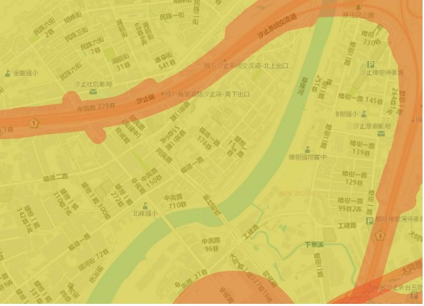
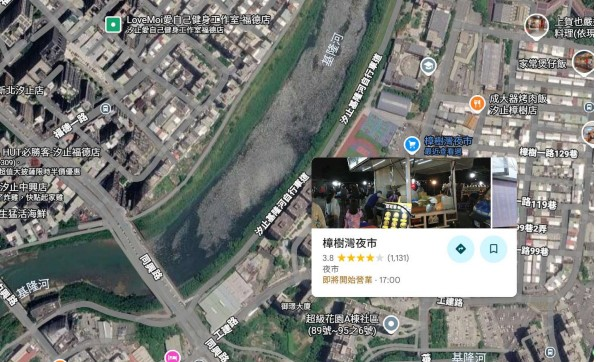